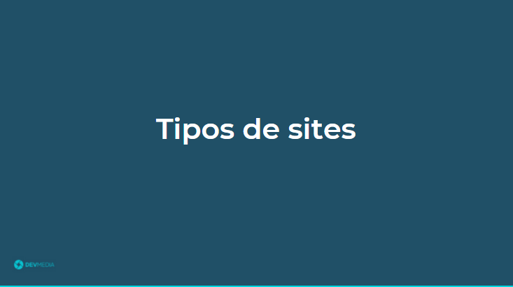


 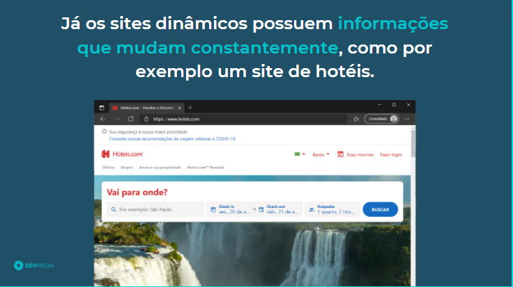
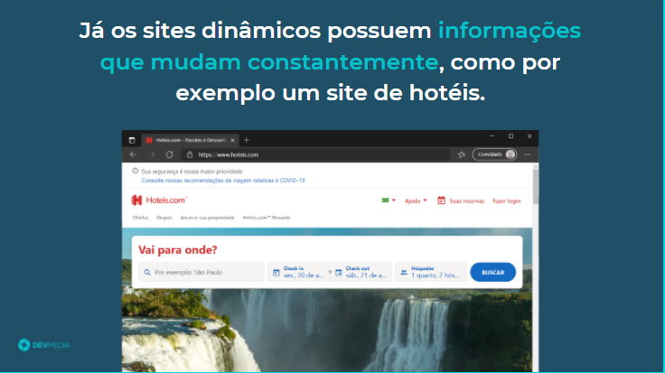


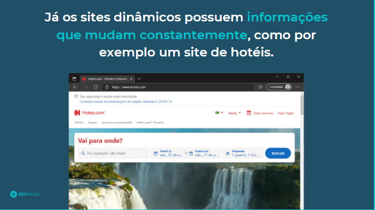
Os sites podem ser classificados em estáticos e dinâmicos como pode ser visto no flow abaixo:
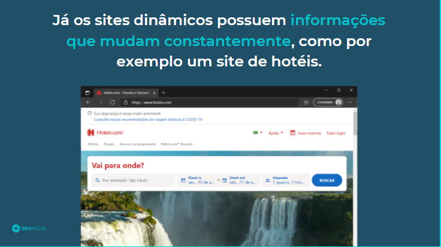
Para absorvermos o conceito de sites estáticos e dinâmicos vamos analisar dois sites e identificarmos qual é o seu tipo. No flow abaixo vamos analisar o site Vale Gás:
 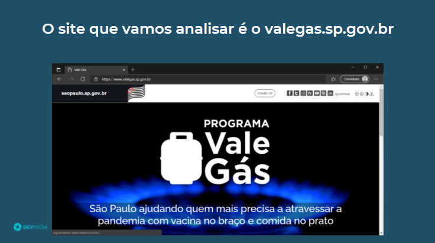
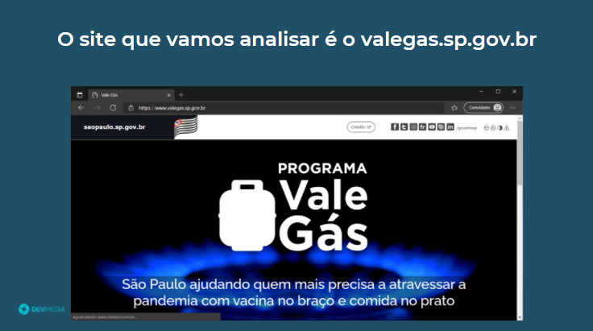


Site estático não precisa que seu conteúdo seja sempre atualizado.
Veja no flow abaixo uma análise do site
O Dia:


Site dinâmico precisa de um back-end para guardar as informações e exibir em tempo real, ou seja, é um site onde as suas informações estão sempre mudando, por exemplo um site de vendas que precisa exibir produtos disponíveis em tempo real

 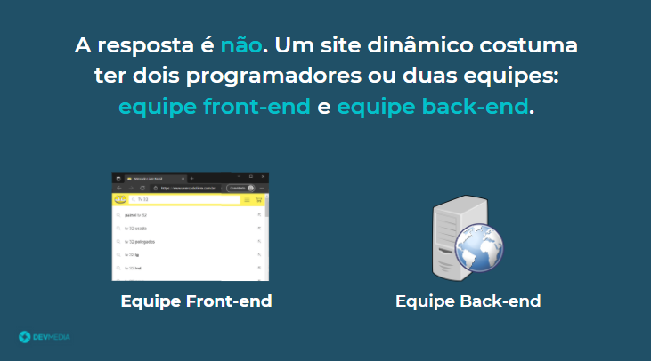
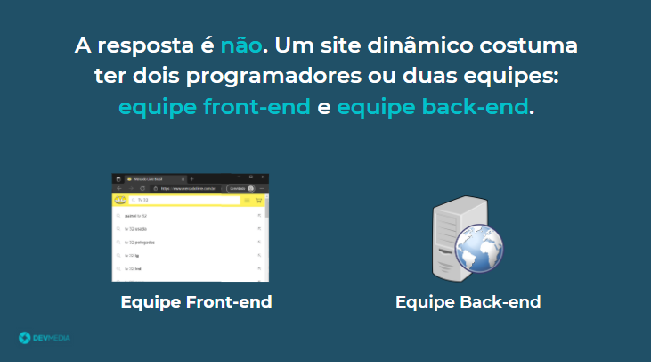


Já conheço o que são sites estáticos e dinâmicos, mas qual eu devo começar a criar? O flow abaixo responde essa pergunta apresentando a curva de aprendizado da programação front-end:


 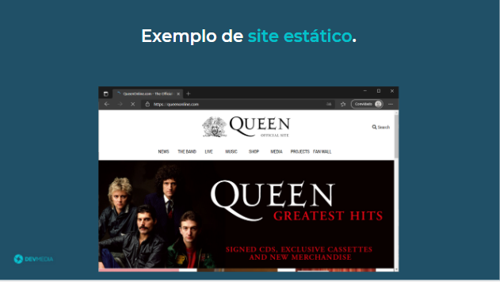
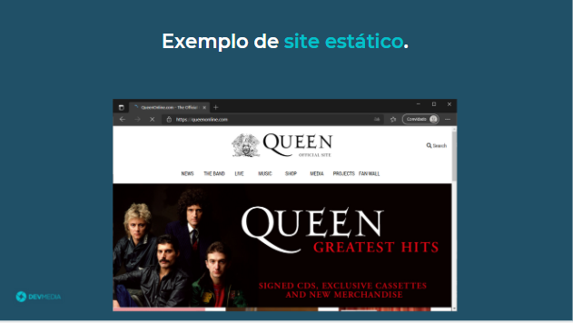


Figura 4
No começo criamos sites estáticos, ou seja, sites que não precisam de atualizações dinâmicas, com o tempo, prática e aprendizado criamos sites dinâmicos, ou seja, que o seu conteúdo muda em tempo real